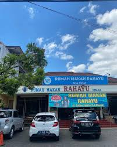

Cita Rasa Khas
Nusantara
Menyajikan masakan rumahan autentik dengan resep warisan keluarga di jantung Labangka. Bersantap hangat seperti di rumah sendiri.

Lebih dari Sekedar Tempat Makan
Warung Makan Rahayu hadir di Labangka, Penajam Paser Utara, dengan misi sederhana: menyajikan hidangan rumahan yang menggugah selera dengan bahan-bahan lokal pilihan.
Kami percaya bahwa makanan terbaik adalah yang dimasak dengan hati. Setiap resep yang kami hidangkan merupakan warisan keluarga yang dipertahankan keaslian rasanya. Tempat yang nyaman dan bersih menjadikan kami pilihan tepat untuk bersantap bersama keluarga, teman, maupun rekan kerja.
Bahan Segar
Bahan baku harian pilihan
Resep Asli
Cita rasa autentik Nusantara
Menu Spesial Kami
Pilihan hidangan favorit pelanggan yang selalu disiapkan fresh setiap harinya. Tersedia juga berbagai menu rumahan lainnya.

Ayam Bakar Taliwang
Rp 35kAyam kampung bakar dengan bumbu khas Taliwang yang pedas gurih, disajikan dengan plecing kangkung.

Nasi Campur Rahayu
Rp 25kPaket lengkap nasi putih dengan lauk pauk harian, sayur lodeh, tempe orek, dan sambal terasi spesial.
"Tersedia puluhan menu masakan rumahan lainnya yang berganti setiap harinya."
Pesan via WhatsAppLokasi Warung
Kami mengundang Anda untuk singgah dan menikmati sajian lezat di tempat kami yang nyaman.
Alamat Lengkap
GFCQ+978, Labangka, Kec. Babulu
Kabupaten Penajam Paser Utara
Kalimantan Timur 76285
Jam Operasional
Setiap Hari: 08.00 - 20.00 WITA
Tutup pada hari raya besar